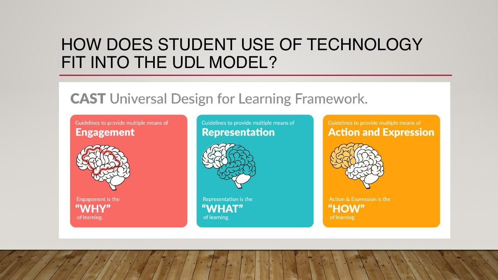
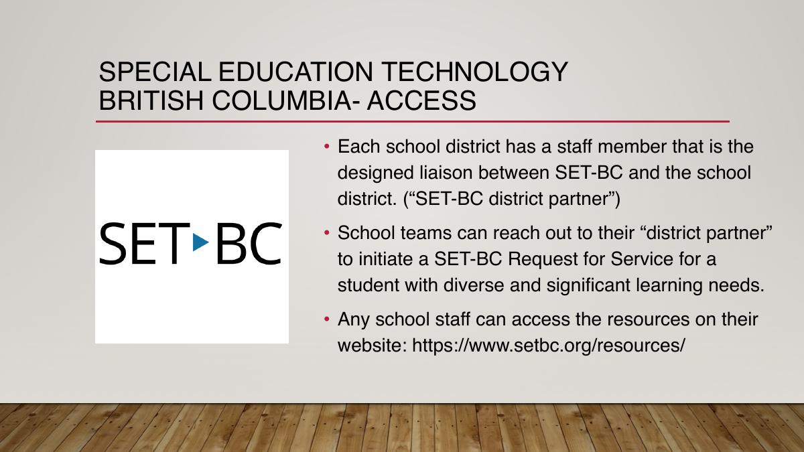
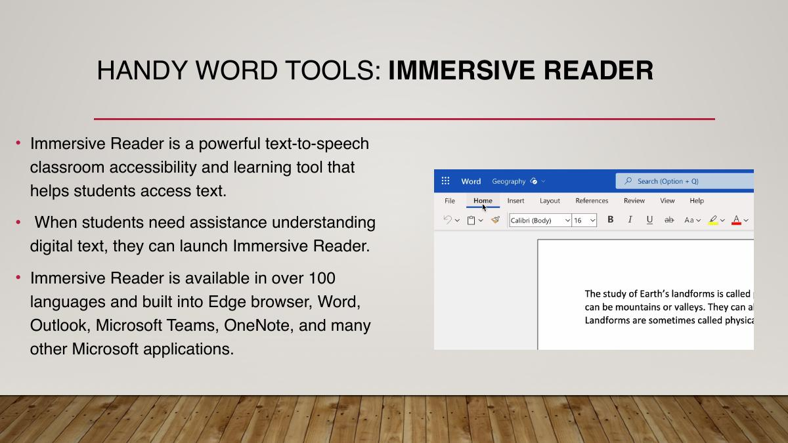

Technology that removes barriers to learning
Day 1 introduces the Educational Assistant’s role in choosing and using technology with purpose. The central question is not simply “What tool is available?” but “What barrier does the learner face, and how can the school team support access, participation, inclusion, and independence?”
No section matches that search.
1. Begin with the barrier, not the device
Technology is knowledge put into practical use: a tool or process that solves a problem or makes a new action possible. In schools, that broad idea becomes three related forms of support.
Accessible educational materials
Content designed or adapted in alternate formats and presented in different ways so a learner can acquire information and show learning at an appropriate level.
Accessible technology
Features and tools that make common learning tasks easier to perceive, understand, navigate, or complete—for example, text-to-speech or speech-to-text.
Assistive technology
Specialized tools selected to address a specific access, communication, physical, or vision barrier experienced by an individual learner.
Connect technology to curriculum and inclusion
BC’s Core Competencies—communication, thinking, and personal/social development—provide a useful lens for technology use. Digital literacy adds communication and collaboration, digital citizenship, information literacy, problem solving, technology operations, creativity, and innovation.
In a Universal Design for Learning approach, technology can offer multiple ways to engage with learning, receive information, and act or express understanding. A tiered model adds a second question: is the support useful for everyone, a targeted group, or one learner with an individualized need?

EA lens: A tool is not automatically inclusive. It becomes useful when it increases meaningful access to the same learning community, supports an IEP or Core Competency goal, and moves the learner toward appropriate independence.
2. Plan student use around a clear purpose
Technology can improve access, motivation, organization, communication, time management, collaboration, assessment, and flexibility. Those benefits depend on intentional use.
Possible benefits
- Present content at an accessible pace or level.
- Offer alternate ways to read, write, communicate, practise, and demonstrate learning.
- Support task initiation, transitions, organization, and time awareness.
- Reduce a specific distraction for a defined period.
- Make progress data easier for the school team to review.
- Build relevant digital and employment skills.
Questions before use
- What barrier or IEP objective are we addressing?
- What will the student do with the tool, when, and for how long?
- Does it support participation or unintentionally isolate the learner?
- What instruction, reinforcement, or visual support is needed?
- How will we know whether it is working?
- When should support be adjusted or faded?
If a learner has used a device only for entertainment, a transition plan may be needed before the same device functions as an instructional tool. Headphones or time away from social demands can be helpful, but the deck stresses using them for a specific purpose and a specific period—not as a default placement.
The EA’s role
- Know the IEP and the purpose of technology named in it.
- Implement agreed programming and report progress or concerns to the teacher and school-based team.
- Share observations and suggestions without making individual technology decisions alone.
- Seek training, connect with colleagues using similar tools, and consult school or district technology staff.
Decision rule: Student-specific technology use is a school-based team decision. EAs contribute essential observations and implementation support, while use remains guided by the IEP, team direction, district policy, and privacy requirements.
3. Protect privacy and model digital responsibility
School technology is governed by more than classroom convenience. The Burnaby School District’s Digital Responsibility Guidelines apply to staff and students using district or personal devices in school contexts.
School personnel are expected to
- Keep student information private and use educationally appropriate content and tools.
- Help students locate, evaluate, and use digital information critically.
- Follow copyright law and acknowledge ownership of creative work.
- Teach and model respectful, safe, and responsible online behaviour.
- Report harmful, unsafe, or inappropriate behaviour.
- Monitor student use of district, school, and personally owned devices.
Why Privacy Impact Assessments matter
A Privacy Impact Assessment (PIA) is a structured review of a digital tool or service that may collect, use, store, or share personal information. The course explains that PIAs help the district identify privacy risks, meet its legal responsibilities, and build trust with students and families.
- Check the Digital Resources Catalogue. Look first for a district-approved tool in the relevant category.
- Check what data the tool collects. Personal, sensitive, and student-specific information needs particular care.
- Use district accounts where directed. In Burnaby, the deck recommends district Microsoft 365 accounts for schoolwork rather than unapproved cloud platforms.
- Request review when needed. Check items already under review before submitting a new request.
- Ask for support. Use the school technology contact or District Help Desk when access, approval, or troubleshooting is unclear.
Privacy test: If a tool is not approved, do not enter student names, contact information, grades, IEP content, behaviour records, medical information, photographs, or other identifiable details.
4. Know the provincial services that expand access
Two BC services are especially relevant when school teams need specialized technology, training, or alternate-format curriculum materials.
SET-BC
Special Education Technology British Columbia helps districts use technology with students whose access to curriculum is restricted. Support can include consultation, professional learning, classroom resources, assistive-technology loans, repair, maintenance, and troubleshooting through SET-Desk.
Each district has a SET-BC liaison. A school team can work through that district partner to begin a Request for Service for a learner with significant and diverse needs.
ARC-BC
The Accessible Resource Centre British Columbia provides eligible students with perceptual disabilities—and the educators supporting them—with curriculum materials in alternate formats.
The deck lists digital files, large print, braille, Corel, and MP3 among the available formats. Access is limited to registered BC educators supporting eligible students, following required training and registration.

5. Match hardware to the level of need
Available hardware varies across schools and districts. A tiered view helps distinguish common classroom tools from targeted and individualized supports.
| Level | Typical use | Examples from the course |
|---|---|---|
| Tier 1 | Broad access for a whole class or school population | Desktop computers, classroom displays, document cameras, printers, common peripherals |
| Tier 2 | Targeted small-group or resource-room use | Shared laptops or iPads, coding hardware, robotics and ADST tools |
| Tier 3 | Individualized access based on a learner’s assessed needs | Dedicated laptop or iPad, braille display or brailler, magnification equipment, speech-generating device, switches, adapted input |
Access is an ecosystem
A device alone is rarely the solution. Successful use includes positioning, access method, vocabulary or content setup, staff training, opportunities to practise, maintenance, data review, and consistency across people and settings.
The Day 1 case examples reinforce this point. Sarah’s team trialled equipment before selecting supports. Remington combined a SET-BC laptop with speech-to-text and read-back tools. Blake’s team considered both vision access and communication before using magnification and NovaChat.
Ask the learner and the team: What can the student do independently now? What becomes possible with the tool? What support is still required? What would make the system easier to use across the day?
6. Use AI as a support, with human judgment intact
The course presents AI as a possible aid for planning, differentiation, and content creation—not a replacement for professional judgment, relationships, or learning.
Privacy and ownership
- Review a tool’s privacy policy and district approval status.
- Never enter personal, sensitive, confidential, or student-specific data into an unapproved AI tool.
- Anonymize scenarios and replace real names and details.
- Consider copyright, permission, public availability, and cultural knowledge before uploading source material.
Accuracy and learning
- Check outputs for errors, omissions, bias, harmful content, relevance, and age appropriateness.
- Edit and verify before sharing AI-generated materials with students.
- Set clear expectations for permitted student use and require transparency or citation.
- Ask: “Is AI helping me learn, or doing the learning for me?”
A stronger prompt has four parts
Goal
State exactly what you want generated.
Context
Explain the audience, purpose, and learning situation.
Source
Provide approved references, examples, or curriculum links.
Expectations
Specify format, length, reading level, boundaries, and required checks.
Review
Fact-check and revise the response before use.
Iterate
Refine instructions when the output does not meet the learning need.
7. Software can support literacy, vision, and communication
Educational software ranges from common reading and writing tools to specialized access and augmentative communication systems.
| Need | Functions to look for | Examples named in the deck |
|---|---|---|
| Reading and writing | Text-to-speech, speech-to-text, word prediction, highlighting, dictionaries, graphic organization | Clicker 8, Read&Write, Kurzweil 3000 |
| Vision access | Screen reading, magnification, image description, contrast and display controls | JAWS, ZoomText, built-in OS accessibility features |
| Communication | Symbol or text-based vocabulary, speech output, alternative access, consistent motor patterns | Grid 3, NovaChat, eye-tracking software such as Look to Learn |
| Design and coding | Creative production, computational thinking, robotics, media | DigiPen and Palo Alto programs; district ADST tools |
Kurzweil 3000 as an example
The deck describes a combined reading, comprehension, writing, and test-taking environment: natural voices, adjustable reading presentation, dictionaries and synonyms, annotation and study tools, brainstorming and graphic organizers, speech-to-text, and teacher-created assignments.
AAC is more than speech output
An augmentative and alternative communication system must be available throughout the day, contain useful language, and be supported by communication partners who model its use. A learner may require direct touch, switches, eye gaze, or another access method. Teams should allow exploration, provide many authentic reasons to communicate, and avoid limiting the system to requesting.
8. Use familiar platforms as accessibility tools
Microsoft 365 and Google Workspace combine cloud storage, creation, collaboration, and classroom management. The deck notes that Burnaby staff and students use district Microsoft 365 accounts.
Microsoft 365
OneDrive, Word, PowerPoint, Teams, OneNote, Forms, Whiteboard, Minecraft Education, and Copilot are presented as connected tools for storage, creation, communication, class organization, and collaboration.
Useful Word features include Share, Dictate, Translate, Draw, Office Lens, Accessibility Checker, and Immersive Reader.
Google tools
Docs, Slides, Classroom, Drive, Forms, Calendar, and Meet support simpler cloud-based creation and real-time co-editing. The course highlights commenting, automatic saving, speech-to-text, sharing, and assignment workflows.
Use depends on district direction, account access, privacy approval, and the task’s feature needs.
Immersive Reader
Immersive Reader reads text aloud while highlighting, adjusts speech rate and page appearance, focuses lines, breaks words into syllables, identifies parts of speech, supplies picture clues, and supports translation. Reading Coach can listen to oral reading and generate fluency feedback and practice.

Microsoft Edge also provides read-aloud, text enlargement, colour and spacing changes, line focus, and simplified reading views. These features can help students who need decoding, language, attention, or vision support.
9. Evaluate websites before recommending them
The Day 1 website activity asks groups to explore resources for a particular learning need, evaluate them, and demonstrate one useful site. The evaluation is as important as the discovery.
Website evaluation checklist
Learning fit
Does the content match the learner’s age, current skill, curriculum, IEP objective, and interests?
Access
Can the learner navigate it? Check reading level, audio, keyboard use, contrast, captions, and motor demands.
Feedback
Does feedback teach, guide, and encourage—or merely mark an answer wrong?
Privacy
Does it require an account or collect names, work samples, location, advertising data, or other information?
Cost and ads
Identify subscriptions, in-app purchases, advertising, free-trial limits, and what happens after the trial.
Classroom use
Explain when, with whom, and for what purpose the site would be used, including how progress will be observed.
Categories explored in class
Keyboarding; general academics; French; math curriculum and practice; digital libraries and literacy; quizzes; story and comic creation; social studies and science; STEAM and coding; physical activity and mindfulness; social skills; online magazines; visual supports; mental-health resources; and educator materials.
Remember: Websites, pricing, account requirements, and privacy practices change. Recheck the live site and district approval status before using it with students.
10. Review the central ideas
Open a card to check your explanation.
Accessible educational materials
Curriculum content provided in alternate formats or through varied presentation methods so learners can acquire and demonstrate knowledge.
Accessible technology
Tools or built-in features that reduce common barriers to perceiving, navigating, understanding, or creating content.
Assistive technology
Specialized technology selected to address an individual learner’s access, communication, physical, or vision needs.
UDL and technology
Technology may provide multiple means of engagement, representation, and action or expression.
School-based team decision
The team determines student-specific technology, timing, and purpose; the EA contributes observations and implements the agreed plan.
PIA
A Privacy Impact Assessment reviews how a digital tool collects, uses, stores, and shares personal information and identifies privacy risk.
SET-BC
A provincial resource program offering consultation, training, resources, technology loans, and technical support through district partnerships.
ARC-BC
A provincial service providing eligible students and educators with BC curriculum materials in alternate formats.
AI privacy rule
Do not enter personal, sensitive, confidential, or student-identifying information into unapproved AI tools.
Strong AI prompt
State the goal, context, approved source information, expected format and boundaries; then review and fact-check the result.
Immersive Reader
A Microsoft reading-support environment with read-aloud, highlighting, display controls, grammar supports, translation, picture clues, and line focus.
AAC partner support
Keep the system available, model language, allow processing and exploration, and create authentic opportunities for many communication purposes.
11. Day 1 knowledge check
Choose the best answer, then check the complete set. Explanations appear beneath each question.